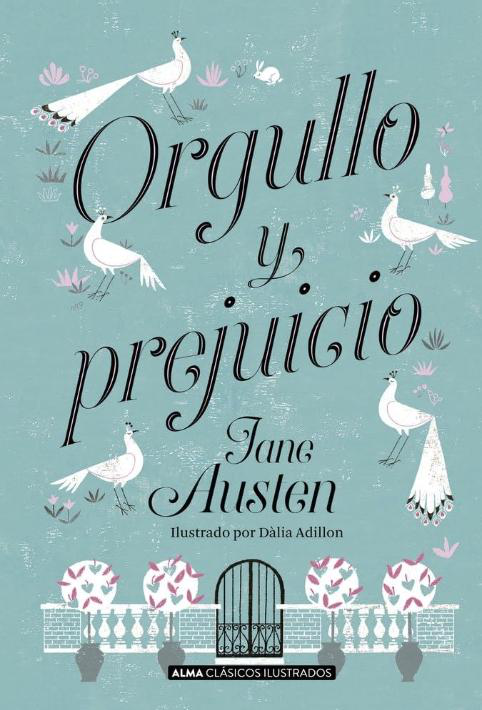
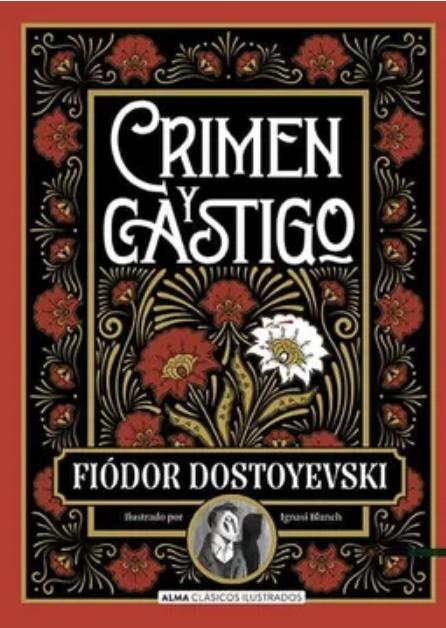
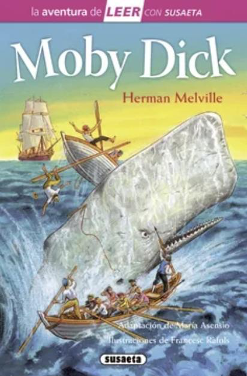
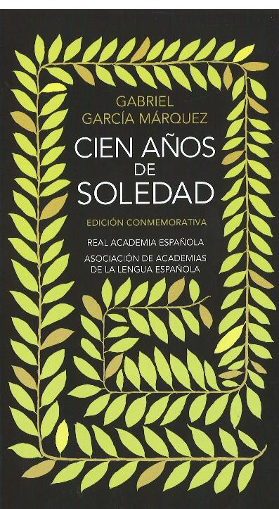
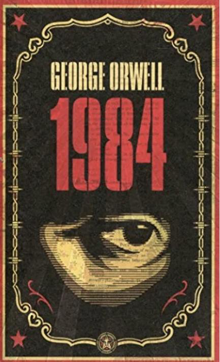

Orgullo y prejuicio
Jane Austen
Es una sucesión de acontecimientos donde le ocurre “algo” a “alguien”. Expresa un evento organizado de forma determinada y puede aplicarse al ámbito real y ficticio.
La estructura narrativa determina cómo se presenta la sucesión de acontecimientos y modifica el orden en que la historia llega al lector.
El documento Ejemplos de Tipologías Textuales presenta estas novelas como ejemplos de narración extensa con personajes, espacio y tiempo determinados.

Jane Austen

Fiódor Dostoievski

Herman Melville

Gabriel García Márquez

George Orwell